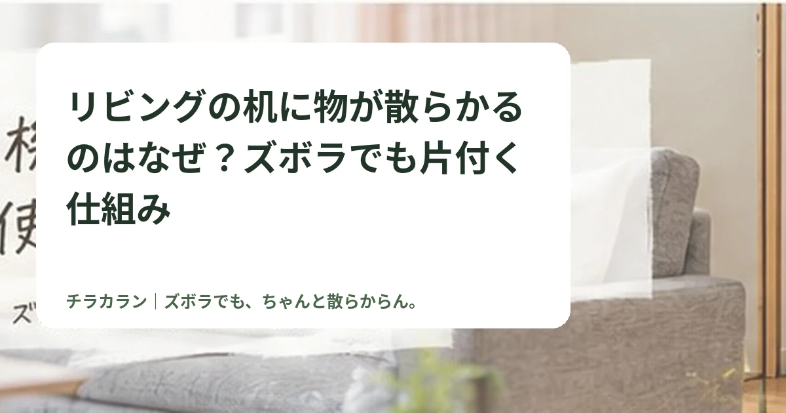

リビングの机に物が散らかるのはなぜ？ズボラでも片付く仕組み
机の上がすぐ物だらけになるなら、片付け回数を増やすより「置いてしまう理由」に合わせて定位置を近づける方がラクです。

結論：机を「置かない場所」にするより、置き先をすぐ横につくる
机に物を置いてしまうのは、だらしなさだけが原因ではありません。郵便物、薬、リモコン、充電ケーブルなど、使う場所と収納場所が離れていると、机がいちばん便利な一時置き場になります。
チラカランでは、毎回きれいに戻すことより、机よりラクな置き先をつくる*ことを優先します。
まず「何が置かれているか」だけ見る
散らかった机を全部まとめて片付ける前に、よく残る物を3〜5種類だけ確認します。
- 郵便物や学校・仕事の紙
- リモコン
- 薬やサプリ
- 充電中のスマホやケーブル
- バッグや鍵
毎回同じ物が残るなら、その物には今の収納場所が合っていない可能性があります。
戻す動作を1回減らす
引き出しを開けて、箱のふたを開けて、さらに中へしまう収納は、きれいでも戻すのが面倒です。机の近くに浅いトレーやオープンボックスを置き、「ここへ入れれば終了」にすると続けやすくなります。
一時置きは作ってもいい
一時置きスペース自体が悪いわけではありません。範囲が決まっていないことが問題です。A4トレー1個、かご1個など、あふれたら見直すサイズ*にしておくと机全体へ広がりにくくなります。
収納用品は最後に買う
まず家にある箱やトレーで数日試して、そこに自然と物が集まるか確認します。使えそうなら、その場所に合う収納用品へ替えれば十分です。
まとめ
机を散らかさないコツは、意志の強さより動線です。「使ったら元に戻す」が続かないなら、戻す場所の方を近づけてみましょう。
チラカランの考え方
頑張る回数を増やすより、頑張らなくても回る仕組みを。